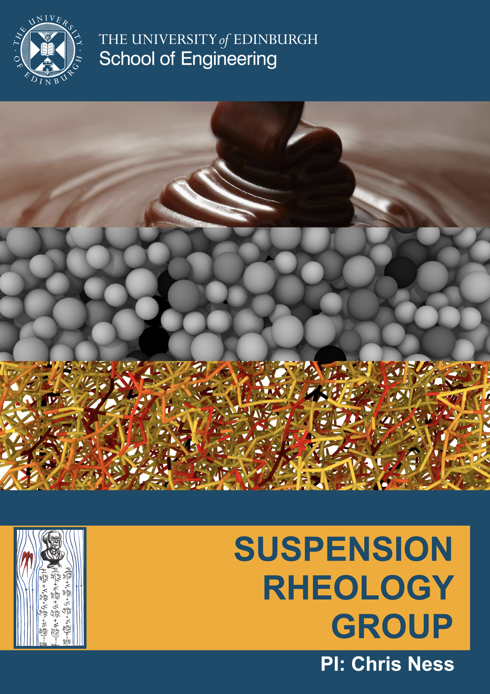
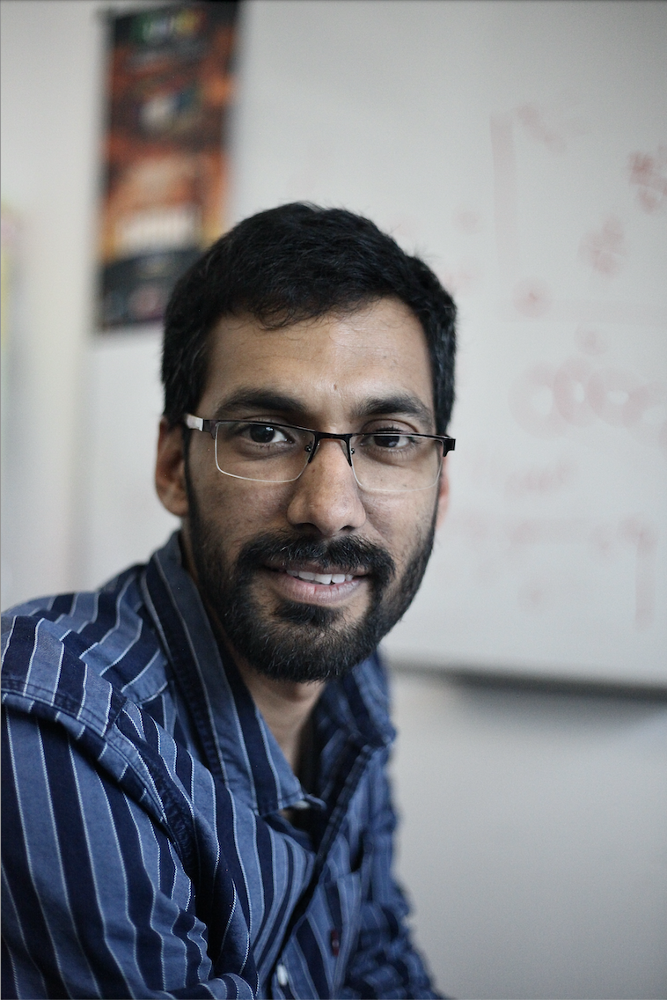
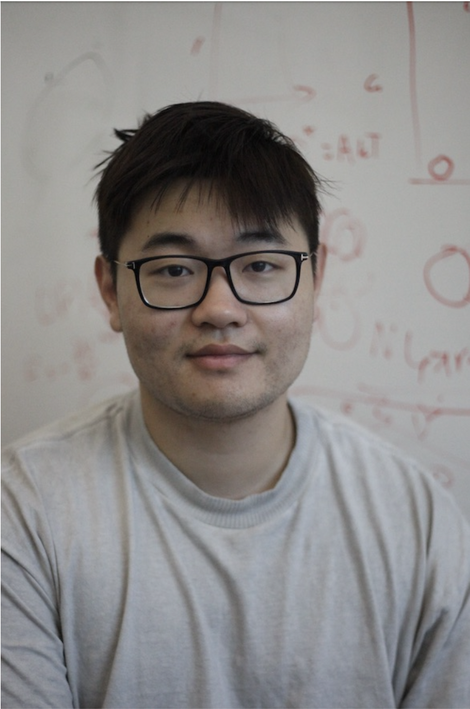
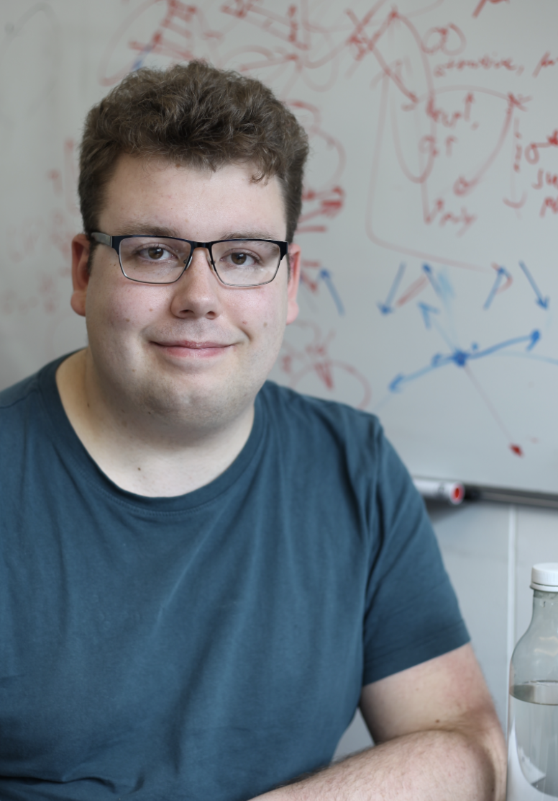
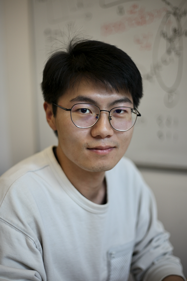
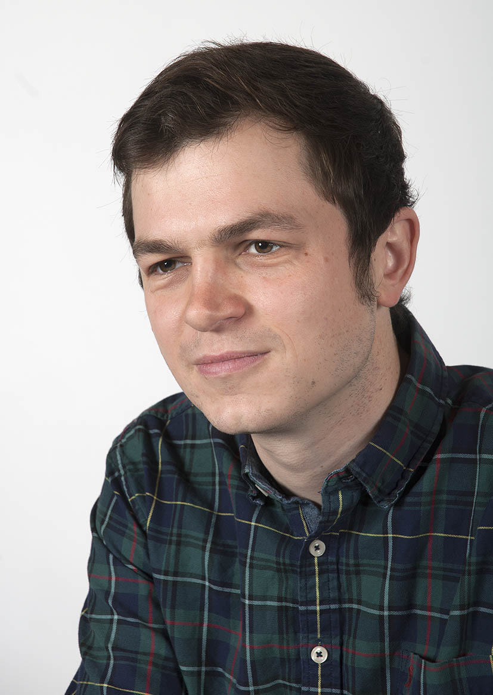

RESEARCH GROUP
We are based in the
School of Engineering at the University of Edinburgh






Current group members
Sept 2023-present: A. Dixon,
MEng
May 2023-present: H. Bridge (with G. Melaugh and C. MacPhee),
PhD
Jan 2023-present: Dr B. Bhowmik,
PDRA [Google Scholar]
Dec 2022-present: M. Hassanpour (with S. Haeri),
PhD
Oct 2022-present: A. Zeng,
MSci, now
PhD
Nov 2021-present: X. Li,
PhD
Jan 2021-present: A. Robertson,
PhD
2019-2024: Y. Li,
PhD [Google Scholar]
Former
in Edinburgh:
2022-2023: K. Maksymiuk, MEng,
Using photoelasticity to understand particulate flows in chemical engineering
2021-2022: S. Zuckerberg, MEng,
Making photoelastic partices for granular suspensions
2020-2021: K. Antoniou (with W Poon), MPhys,
Illuminating contact forces in suspensions
2020-2021: L. Debono, MEng,
The Rheology of Dense Suspensions in Viscoelastic Media under Shear Flow
2020-2021: M. Blair, MEng,
Thickening in dense suspensions under shear flow
in Cambridge:
2017-2018: R. Tilley, MEng,
Shear Thinning of Dense Cornstarch Suspensions at High Shear Rates
2017-2018: P. Martin, MEng,
Extensional Rheology of Dense non-Brownian Suspensions
2017-2018: K. Poon, MEng,
Extensional Rheology of Shear Thickening Materials
2017-2018: C. Rusli, MEng,
Extensional Rheology of Shear Thickening Materials
2017-2018: L. Sefton, MPhys,
Absorbing phase transitions in granular suspensions
2017-2018: N. Wolf (with A. Zaccone), MPhys,
Molecular Dynamics Simulation of Sheared Particles
2016-2017: A. Khan (with N. Vriend), MPhil,
Visualising and Characterising Contact Networks in Submerged Photoelastic Disks
2016-2017: M. Jones, NanoDTC,
Tuning the Rheology of Athermal Particle Suspensions with Attractive Interactions
2016-2017: O. Cheal, MPhys,
Fragile Behaviour of Dense Suspensions Under Elongational Flow
go back